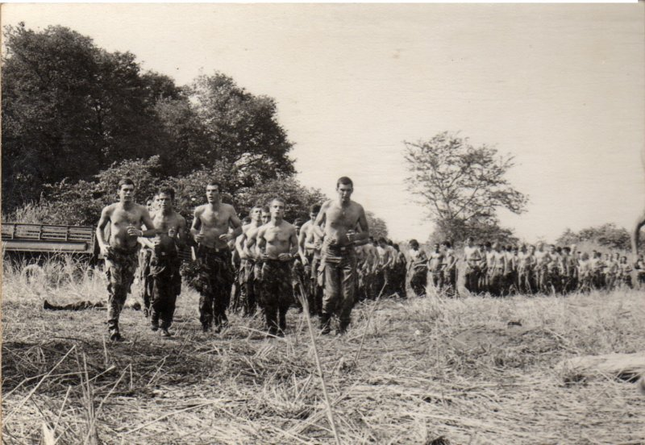

1102 Prova de Choque – Úcua

No fim de cada sessão matinal de ginástica educativa, toda a companhia de instrução realizava um extenuante crosse em volta do grande perímetro da parada improvisada. Na cabeça da corrida podemos ver alguns dos oficiais instruendos, destacando-se na primeira fila à direita o capitão Cunha Lopes, nosso comandante de companhia até Novembro de 1973.
Ligeiramente abaixo do meio da foto e do lado esquerdo, podemos ver um instruendo que sucumbiu ao cansaço e que, depois de avaliado, será socorrido na enfermaria de campanha e reenviado para o seu grupo onde continuará a instrução.
Photo album created with Web Album Generator